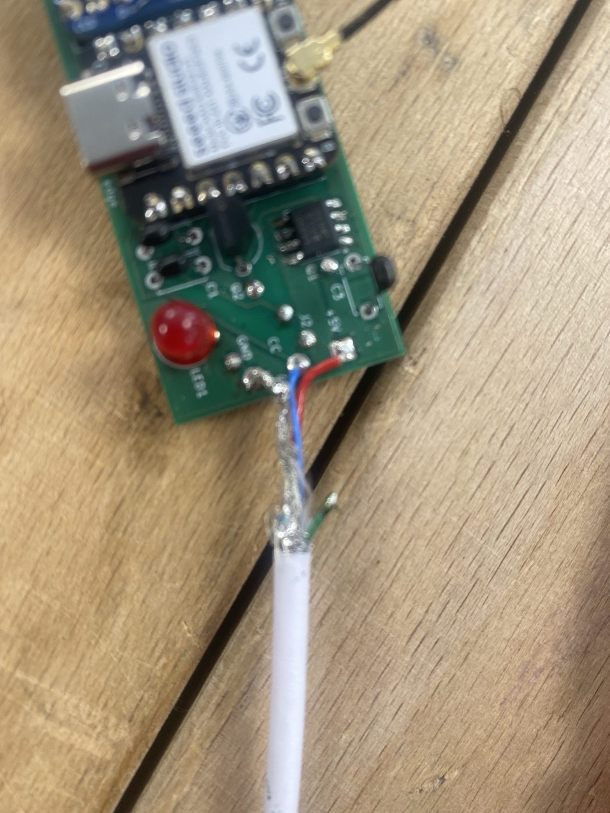
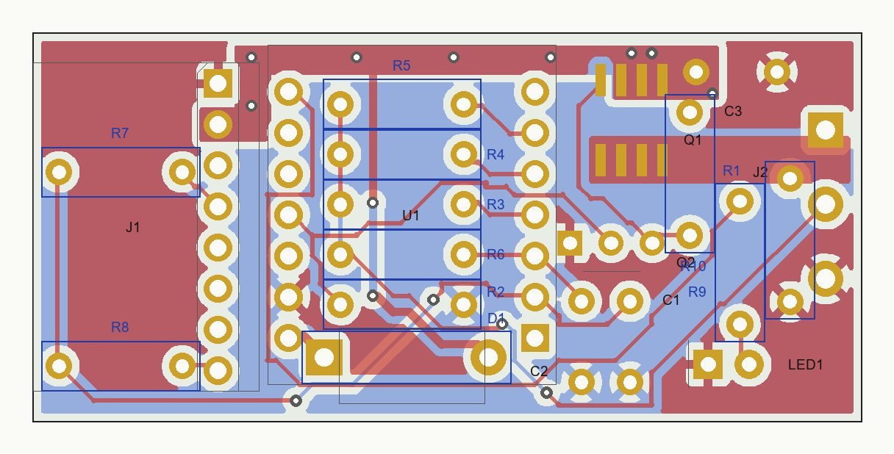
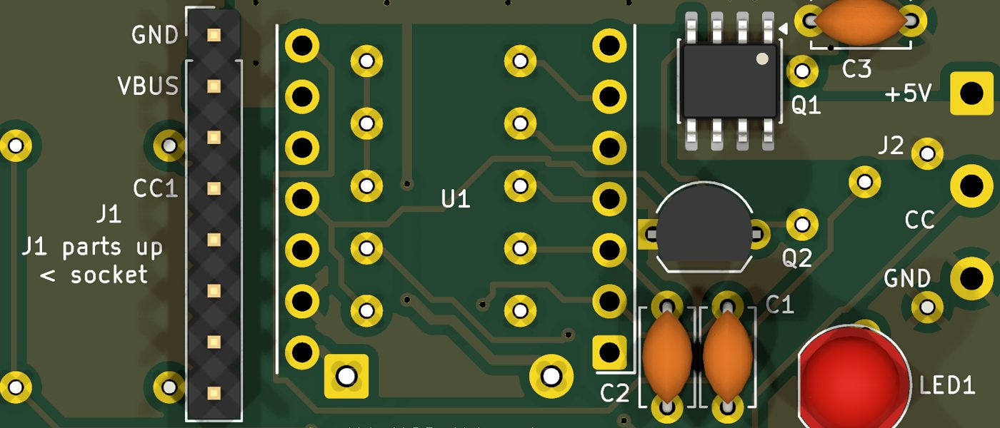
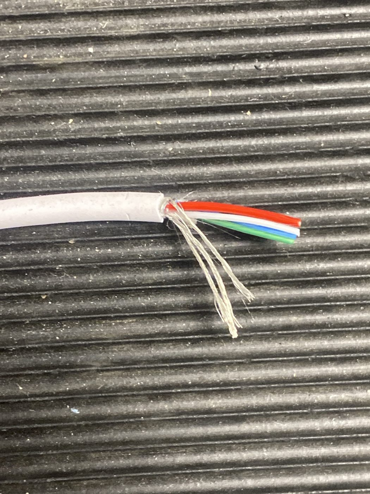
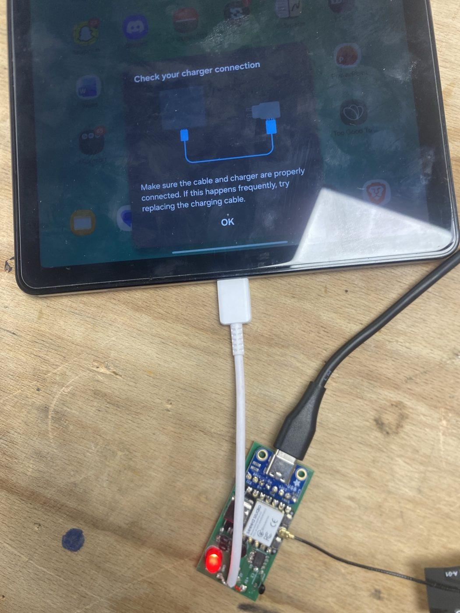
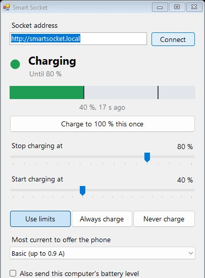
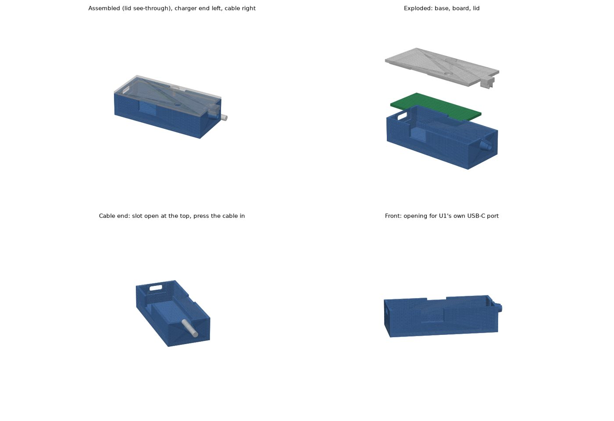
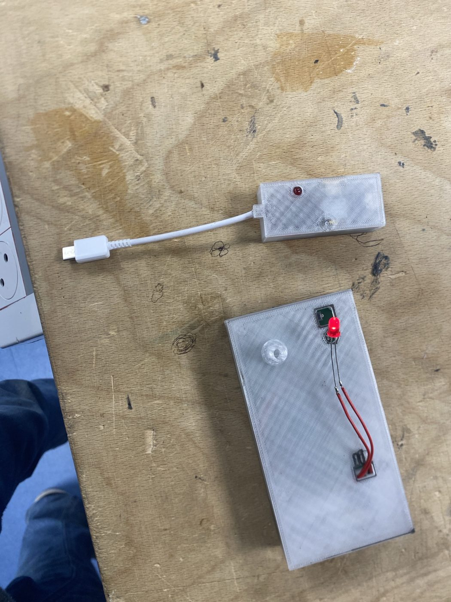

This document assumes no prior knowledge of electronics or programming. Every idea is introduced the first time it is needed, in everyday language first and then with the exact technical words, so that by the end you can explain the whole project to anyone, including an engineer or an interviewer. Wherever a decision was made, a box marked with a black bar on the left explains why that option was chosen and what the alternatives were.
The real measurements from the build (the numbers read on the multimeter in the lab, the readings the socket reported, the tablet's charging current) are quoted throughout, so that the theory always connects to what actually happened on the bench.
Diagrams are drawn in black and white. Photographs are of the actual board and parts.
Almost every phone, tablet, earbud and power bank uses a lithium-ion battery. Inside it, charging pushes lithium atoms from one side of the cell to the other, and using the phone lets them flow back. The "fuller" the battery, the higher its voltage (the electrical "pressure" it holds, explained in chapter 3). An empty cell sits at about 3.0 to 3.5 volts; a completely full one at about 4.2 volts.
The higher that voltage, and the hotter the cell, the faster the chemistry inside slowly wears out. Each full cycle from empty to 100 % costs a little capacity; sitting at 100 % for hours (for example charging all night) costs more.
Battery University, a widely used reference run by the battery maker Cadex, gives this rule of thumb for lithium-ion cells: the lower the voltage a cell is charged to, the more charge cycles it survives. Charging to the full 4.20 V gives roughly 300 to 500 cycles; stopping at 4.10 V gives about 600 to 1000; stopping at 4.00 V gives about 1200 to 2000. In other words, every 0.1 V less roughly doubles the battery's life. Stopping at about 80 % keeps the cell near 4.0 V, which is where the familiar "keep it between 20 and 80 %" advice comes from. Heat makes things worse, which is why the socket also has a temperature cut-out (chapter 13).
Many recent phones already offer an "80 % limit" setting. But not every device does (older phones, many tablets, earbuds, power banks), the setting usually cannot be scheduled or controlled from another room, and it cannot be told "charge only during off-peak hours" or "stop after 45 minutes". The smart socket adds those abilities to any USB-C device, and it is also a complete engineering exercise: electronics, a custom circuit board, a program, wireless communication, two apps and a 3D-printed case.
The smart socket is a small box, about the size of a matchbox, that sits between a USB-C charger and the device being charged. The charger plugs into one end; a short USB-C cable comes out of the other end and plugs into the phone or tablet.
| Feature | What it means for the user |
|---|---|
| Upper and lower battery limits | Stop at, say, 80 %, start again at 40 %. |
| Modes: "use limits", "always", "never" | Normal smart behaviour, a plain charger, or completely off. |
| "Charge to 100 % once" | For a trip: ignores the limit until the battery is full, then returns to normal. |
| Charge timer | For devices that cannot report their battery (earbuds): stop after N minutes. |
| Charging hours | Charge only between two times of day, for example cheap night-time electricity. |
| Current limit: 0.5 A, 1.5 A or 3 A | Gentle slow charging or the fastest the charger allows. |
| Heat cut-out | Pauses if the controller gets above 75 °C, resumes below 65 °C. |
| History | The last 20 charging sessions: when, how long, battery at start and end, why it stopped. |
| Name, PIN, "find me" | Several sockets on one network, each named; a PIN keeps others out; the light flashes on request. |
| Wi-Fi and Bluetooth | Controlled from anywhere on the home network, or nearby over Bluetooth on networks that block devices. |
| Wireless updates | New program versions load over Wi-Fi or Bluetooth; the box never needs opening. |
| Self-recovery | If the program ever freezes, it restarts itself within a minute. |
Five ideas explain almost everything in this project. The easiest way to picture them is water in pipes.
Voltage is the electrical pressure that pushes charge through a wire, like the height of water in a tank. A USB charger provides 5 V. The brain of the socket works internally at 3.3 V. A phone battery is about 3.7 V. Voltage is always measured between two points; in a circuit one point is chosen as the zero reference and called ground (GND).
Current is how much charge flows per second, like litres per second in a pipe. A phone charging slowly takes about 0.5 A; fast charging at 5 V can take 3 A. Small signals inside the socket are measured in milliamperes (mA, thousandths of an ampere).
Resistance is how hard it is for current to flow, like a narrow section of pipe. A resistor is a component made to have a precise resistance. The three quantities are tied together by Ohm's law, the single most useful equation in electronics:
Voltage = Current × Resistance V = I × R so Current = Voltage ÷ Resistance I = V ÷ RExample from this project: the 1 kΩ resistor R10 sits across the 5 V output. Current through it = 5 V ÷ 1000 Ω = 0.005 A = 5 mA. On the bench, measuring J2 +5V to GND with the power off read 0.999 kΩ, which proved R10 was correctly soldered and nothing else was short-circuited.
Power is how fast energy is used: voltage times current. A phone taking 3 A at 5 V uses 5 × 3 = 15 W. Power also tells us how hot a part gets: any part that has voltage across it while current flows through it turns that power into heat. That is why the switch transistor (Q1) was chosen to have a very low resistance (chapter 7).
Power = Voltage × Current P = V × I = Current² × Resistance P = I² × RTwo resistors in a row between a voltage and ground split that voltage in a fixed proportion. This simple trick is used many times in the socket: to signal current limits to the phone, to read what the charger offers, and to detect whether a phone is plugged in.
Everything here is DC (direct current: the voltage stays the same polarity, unlike the 230 V AC in the wall). The brain's pins are digital: each pin is either "high" (3.3 V, meaning 1 or ON) or "low" (0 V, meaning 0 or OFF). A pin can also be an analog input, which measures a voltage between 0 and about 3 V and turns it into a number; the socket uses two of those.
Before looking at the circuit, here is what each kind of part does, with the symbol used to draw it. The exact parts chosen, and why, are in chapter 7.
A resistor is a small component with a fixed resistance, marked with coloured bands. Through-hole (leaded) resistors have wire legs that go through holes in the board; surface-mount ones are tiny rectangles soldered on top. The socket uses only leaded resistors so that every part can be hand-soldered without a microscope. They do three jobs here: set a default state (a "pull-up" or "pull-down" holds a signal high or low when nothing else drives it), form voltage dividers, and limit current (the LED's resistor).
The colour bands read as digits and a multiplier. The 330 kΩ resistors (R1, R2, R6) are orange-orange-black-orange-brown; the 680 Ω (R9) is blue-grey-black-black-brown; the 1 kΩ (R10) is brown-black-black-brown-brown. During assembly each was checked by its bands before soldering.
A capacitor stores a tiny amount of charge and releases it instantly. In this project, 100 nF ("nanofarad") ceramic disc capacitors act as shock absorbers: one on the 5 V input steadies the supply when the phone suddenly starts drawing current, and two on the analog inputs smooth the readings so a single electrical spike cannot fool the brain.
A diode lets current flow in only one direction, like a non-return valve. The side marked with a stripe is the exit (the cathode). Every diode "costs" a little voltage to pass through, its forward voltage. A Schottky diode is a special type with a lower forward voltage (about 0.3 to 0.45 V instead of 0.6 to 0.7 V for an ordinary silicon diode), so it wastes less. An LED (light-emitting diode) is a diode that gives off light when current flows; it must always have a resistor in series to limit that current.
A transistor is an electronic switch with no moving parts. The type used here is the MOSFET. It has three terminals: current flows between the drain and the source, and the voltage on the gate decides whether it may. Almost no current flows into the gate, so a weak signal can control a strong current, the way a small hand on a tap controls a big pipe.
There are two flavours, which behave as mirror images:
When ON, a MOSFET behaves like a very small resistor called its on-resistance, RDS(on). For a power switch this number must be tiny, because the heat it produces is current² × RDS(on).
A microcontroller is a complete small computer on one chip: a processor, memory, storage for its program, and many pins that can be switched on and off or can measure voltages. It runs one program forever, from the moment power arrives. The socket uses an ESP32-C3 chip made by Espressif, mounted on a ready-made thumb-sized board called the Seeed Studio XIAO ESP32-C3, which also includes the USB-C programming port, a 3.3 V regulator, the antenna connector and two buttons.
A PCB is a thin fibreglass sheet with copper tracks printed on it that connect the parts, replacing a tangle of wires. "Two-layer" means copper on both faces, joined where needed by small plated holes called vias. Holes for leaded parts are plated (lined with copper), so a joint soldered on either face connects both layers. The board is coated in green solder mask (an insulating varnish) and printed with white silkscreen labels showing where each part goes.
The whole design rests on understanding the USB-C connector. A USB-C plug looks simple, but it has 24 contacts and a clever handshake that decides whether power is turned on and how much current is allowed.
| Name | What it carries | Used by the socket? |
|---|---|---|
| VBUS | The power: 5 V (or more with fast charging). | Yes: switched by Q1. |
| GND | Ground, the return path for the current. | Yes: passes straight through. |
| CC (CC1 and CC2) | "Configuration Channel": detects that a device is attached, which way up the plug is, and how much current is allowed. Also carries USB Power Delivery messages. | Yes: this is the key signal. |
| D+ and D− | USB 2.0 data. Also used by older "charger detection" schemes. | Not for data; joined together (chapter 6). |
| TX/RX pairs, SBU | High-speed USB 3 / video and side-band signals. | No. |
A USB-C plug can go in either way up. That is why the socket has two CC pins (CC1 and CC2): a cable connects only one of them, and which one tells the electronics which way round the plug is.
A USB-C charger does not put 5 V on its socket all the time. That would be dangerous if two chargers were plugged into each other. Instead, the socket stays "cold" (0 V) until a real device is detected, using two resistors on the CC wire:
Together Rp and Rd form a voltage divider (section 3.5). The charger sees the CC voltage fall into a certain range, knows a genuine sink is attached, and turns on VBUS. The phone, in turn, reads the CC voltage to learn how strong the charger is, because the value of Rp is the charger's way of saying how much current it can give.
The USB Type-C specification defines three "advertisements". A charger whose Rp is pulled up to 5 V uses about 56 kΩ for default USB power, 22 kΩ for 1.5 A and 10 kΩ for 3 A. The phone sees one of three voltage windows across its 5.1 kΩ Rd:
| Advertisement | Current allowed at 5 V | Voltage seen on CC (approx.) |
|---|---|---|
| Default USB power | 0.5 A (USB 2) / 0.9 A (USB 3) | about 0.25 to 0.61 V |
| 1.5 A | 1.5 A | about 0.70 to 1.16 V |
| 3.0 A | 3 A | about 1.31 to 2.04 V |
This is the heart of the design. The smart socket sits in the middle, so:
Because the two CC wires are separate, the socket is in full control: it reads what the charger offers (through R7 and R8) and decides what to tell the phone, never more than the charger can give and never more than the user's "most current" setting.
USB Power Delivery (PD) is a digital conversation over the CC wire in which a phone or laptop asks a capable charger for 9 V, 15 V or 20 V. The socket has no PD chip, and its two CC wires are separate, so neither the socket nor the phone can ever ask the charger for more than 5 V. That is important: the socket's parts (and the brain's input) are designed for 5 V. Even the 65 W laptop charger used in testing safely gave plain 5 V through the socket.
One of the most instructive problems in the project came from two wires the design initially ignored: D+ and D− (the white and green wires in the cut cable).
Before USB-C, chargers had no CC wire. To let a phone know "this is a wall charger, not a computer's USB port", the industry standard USB Battery Charging 1.2 (BC1.2) uses the data wires: a Dedicated Charging Port simply shorts D+ to D− (connects them together, with at most 200 Ω between them). The phone sends a small signal on D+ and checks whether it comes back on D−. If it does, the phone knows it may draw at least 1.5 A. If the data wires are left unconnected, the phone assumes it is on a computer port and limits itself to about 0.5 A.
Many phones (and especially Samsung tablets) check BC1.2 even on USB-C. With the white and green wires cut and taped separately, the test tablet:
After simply twisting the white and green wires together (no soldering, no new parts):
Later, when the joint came apart inside the closed case, the tablet once again showed "USB powered, 0.5 A" and sat at the same percentage while "charging". That is how this chapter's lesson was confirmed twice.
Here is the complete circuit. Each block is then explained: what it does, why it is needed, and why that particular part was chosen.
Job: receive the charger's plug and present the "I am a phone" 5.1 kΩ resistors on CC1 and CC2, so the charger turns on 5 V.
Job: run the program; read the sensing signals; control the switch, the current advertisement and the light; talk Wi-Fi and Bluetooth.
The ESP32-C3 chip has a 32-bit RISC-V processor running at up to 160 MHz, 400 KB of working memory (RAM), 4 MB of storage for the program (flash) on the XIAO board, 2.4 GHz Wi-Fi (802.11 b/g/n) and Bluetooth Low Energy 5, plus analog inputs and even a built-in temperature sensor, which the socket uses for its heat cut-out.
Pins used (the others are left free on purpose; GPIO2, GPIO8 and GPIO9 affect how the chip starts up, and GPIO9 is the BOOT button):
| Pin | Use |
|---|---|
| D1 (analog) | Reads what the charger offers, through R7 and R8. |
| D2 (analog) | Reads the phone's CC through R6: is a phone plugged in? |
| D3, D4, D5 | Drive the phone's CC through 33 kΩ, 12 kΩ or 4.7 kΩ: basic, 1.5 A or 3 A. Only one is driven at a time; the other two are switched to "input" so they are effectively disconnected. |
| D7 | The light, through R9. |
| D10 | Turns the power switch on (through Q2). |
| 5V, GND | Power in. |
Job: feed the charger's 5 V into the XIAO's 5V pin, but stop current flowing backwards out of it.
Job: connect or disconnect the 5 V going to the phone, carrying up to 3 A.
Q1 is placed in the positive (VBUS) line: its source goes to the charger's 5 V and its drain to the phone. Its gate decides. With the gate at 5 V (the same as the source) it is OFF; pulling the gate down to 0 V makes it fully ON.
Job: translate the brain's 3.3 V "ON" signal into "pull Q1's gate to ground".
Job: act as the charger's Rp towards the phone. The brain drives exactly one of them at 3.3 V.
| Pin | Resistor | CC voltage with the phone's 5.1 kΩ | Phone reads |
|---|---|---|---|
| D3 | R3 = 33 kΩ | 3.3 × 5.1 ÷ (33 + 5.1) = 0.44 V | Basic USB current |
| D4 | R4 = 12 kΩ | 3.3 × 5.1 ÷ (12 + 5.1) = 0.98 V | 1.5 A |
| D5 | R5 = 4.7 kΩ | 3.3 × 5.1 ÷ (4.7 + 5.1) = 1.72 V | 3 A |
Job: let the brain measure the phone's CC voltage on analog pin D2 without disturbing it. R6 is 330 kΩ, far larger than the other resistors, so it hardly loads the line. With nothing attached, D3's 33 kΩ pulls CC up towards 3.3 V (above 1.6 V on D2). When a phone's 5.1 kΩ Rd is present the voltage drops to about 0.44 V. The program treats 0.15 to 1.6 V (2.3 V when 3 A is offered) as "phone present". In the real test it read 0.46 V with the tablet attached and 2.9 V with nothing attached.
Job: read the charger's advertisement. The charger's CC voltage appears on J1's CC1 or CC2 (whichever the plug connects; the other sits near 0 V). R7 and R8 (100 kΩ each) join both into analog pin D1, which therefore sees about half the active CC voltage. The program's thresholds are halved accordingly: above 0.62 V means 3 A, 0.33 to 0.62 V means 1.5 A, below that means basic. C1 (100 nF) smooths the reading.
Real readings: with the laptop charger just after restart, D1 read 206 mV (basic). With a real phone charger and later the laptop charger, it read 838 to 842 mV (3 A). Doubling 842 mV gives 1.68 V, exactly the spec's 3 A level.
Job: when Q1 switches off, capacitors in the phone and cable hold some charge, so VBUS would fall slowly. A phone might not notice the "unplug" cleanly. R10 (1 kΩ) from the output to ground empties that charge within milliseconds. It costs 5 mA (25 mW) only while charging.
100 nF across the 5 V input. When the phone suddenly starts drawing current, the long charger cable cannot react instantly; C3 supplies the first instant. It was originally 1 µF; 100 nF was used on the final board because the charger and the XIAO already have their own capacitors and a spare 100 nF disc was available.
A red 5 mm LED shows the state through a hole in the lid. Its current: (3.3 V − 1.9 V) ÷ 680 Ω ≈ 2 mA, bright enough to see and well within the pin's limits. The program can dim it (rapid switching, called PWM).
| Light | Meaning |
|---|---|
| Off | No phone connected |
| Steady | Charging |
| Blink once a second | Phone present, paused (limit, timer or charging hours) |
| Fast blinking | Setup mode open |
| Very fast flicker | A program update is being written |
| Short flash every 2 s | Too warm, paused |
| Rapid flashing for 8 s | "Find me" |
Instead of a second socket, the phone side is half of a USB-C to USB-C cable, cut about 15 cm from the plug and soldered to three pads.
The cut cable had four coloured wires and a bare braided shield. The wire colours are not standardised, so each was identified with the multimeter's continuity beeper against the input board's pins:
| Wire | Found to be | Goes to |
|---|---|---|
| Red | VBUS | J2 +5V (square pad) |
| Blue | CC | J2 CC |
| Silver braid | Ground (no black wire in this cable) | J2 GND |
| White, green | D+ and D− (data) | Twisted together, insulated (chapter 6) |
No extra button was added: the XIAO's own BOOT button is reused, pressed through a thin flexible skin in the lid. One press: charge to 100 % once. Three quick presses: join Wi-Fi by WPS. Hold 3 s: open setup. Hold 10 s: forget everything.
| Question | Calculation | Result |
|---|---|---|
| Maximum power to the phone | 5 V × 3 A | 15 W |
| Heat in Q1 at 3 A | 3² × ~0.035 Ω | ~0.3 W (stays cool) |
| Current through R1 when charging | 5 V ÷ 330 kΩ | 15 µA |
| CC voltage, basic | 3.3 × 5.1 ÷ 38.1 | 0.44 V |
| CC voltage, 1.5 A | 3.3 × 5.1 ÷ 17.1 | 0.98 V |
| CC voltage, 3 A | 3.3 × 5.1 ÷ 9.8 | 1.72 V |
| Rejected 10 kΩ for 3 A | 3.3 × 5.1 ÷ 15.1 | 1.11 V = reads as 1.5 A (wrong) |
| Charger offer threshold, 3 A | half of 1.31 V window start, with margin | 0.62 V on D1 |
| LED current | (3.3 − 1.9) ÷ 680 | ~2 mA |
| Bleeder current | 5 ÷ 1000 | 5 mA (25 mW) |
| Voltage to the XIAO | 5 V − ~0.4 V (Schottky) | ~4.6 V |
| Expected resistance J2 +5V to GND, power off | R10 | 1 kΩ (measured 0.999 kΩ) |
No circuit simulation was run for this project, deliberately: the circuit is resistor dividers and one switch, so the arithmetic above is everything a simulator would show. What arithmetic cannot predict is how real chargers and phones behave, which is what the breadboard test and the bench measurements were for.
A breadboard is a plastic board full of spring contacts, in which parts are pushed in and connected with wires, no soldering needed. The circuit was first planned on the lock-in project's breadboard, at basic current only, because breadboard contacts are not made for 3 A. A script checked the breadboard layout against the circuit (16 connections), and deliberately "broke" it 66 ways to make sure the check catches mistakes.
KiCad is free, professional-grade software for designing circuit boards. The design starts as a schematic (the circuit drawing), checked by KiCad's electrical rules check (ERC): 0 errors, 0 warnings. A separate script compared every connection in the drawing to the intended circuit: 16 of 16 matched.
Each part is given a footprint: the exact pattern of holes and copper pads it needs on the board. Footprints for the XIAO and the Adafruit board were copied from the manufacturers' own files (Seeed's pin spacing 15.24 mm between the two rows; Adafruit's pins 11.43 mm behind the socket edge), so the modules would drop straight in.

The final board measures only 51.2 × 24 mm. It replaced a first version (61.5 × 24 mm with ten tiny surface-mount parts) the same day, after deciding together on three goals: no extra cost, as little fine soldering as possible, and a straight "inline dongle" shape.
The two modules (the input board J1 and the XIAO) stand on pin headers about 2.5 mm above the board. That empty space underneath was used: the ten resistors and the diode lie flat on the underside, under the modules. This shrank the board by about 10 mm and let every resistor be a cheap leaded spare from the lock-in order.
A thin copper track behaves like a resistor and heats up. The 3 A path therefore does not use thin tracks: it uses wide copper areas ("pours" or "zones"). The 5 V input runs along the back edge on both layers, joined by a row of vias; the phone side is a copper area between Q1 and J2. The rest of both layers is filled with ground copper, which also helps shield the radio.
White labels were added so modules cannot go on the wrong way: "GND / VBUS / CC1" beside J1's pins, "J1 parts up < socket", "U1 USB this edge", and "+5V / CC / GND" beside the cable holes. The cable holes are 0.9 mm so 22 AWG wires fit.

A PCB is ordered by uploading Gerber files (one file per copper layer, mask, silkscreen and drill holes, zipped together) to a board maker. The two serious low-cost options for students are JLCPCB and PCBWay, both in China.
| JLCPCB | PCBWay (chosen) | |
|---|---|---|
| Quote for both designs, 5 of each | US $21.36 | US $17.71 all in |
| Notes | Approved, never paid | $5 new-customer coupon; VAT and EU duty prepaid (IOSS), so nothing to pay at the door |
Specification: 2 layers, 1.6 mm thick, green mask, white silkscreen, HASL lead-free finish (pads coated with solder, easy to solder by hand). Five is the minimum quantity, so there are spares for mistakes or a second unit. Both designs passed the automatic file check. The boards were made, shipped by economy post and delivered in 8 days, then inspected from photos before pressing "Confirm received": all footprints, labels and holes as designed.

All parts came in one DigiKey order shared with the lock-in amplifier (92.64 euros including VAT, free delivery above 75 euros before VAT). The rule for the smart socket was "nothing extra bought": it uses its own few parts (the XIAO, the USB-C board, the power MOSFET, the Schottky diode, four resistor values) plus spares from the lock-in order. Only the USB-C cable came from a shop. Total cost of the smart socket's own parts: about 14.50 euros, plus its share of the boards.
Soldering joins a component's leg to a copper pad with molten metal (solder, a tin alloy, melting around 220 °C). The soldering iron heats both the pad and the leg; solder is touched to them (not to the iron) and flows around both, guided by flux (a cleaner built into the solder wire). A good joint is shiny and shaped like a small cone, wetting both the pad and the leg. A dull, round blob sitting on top ("cold joint") may not connect at all.
Parts are soldered in an order chosen so that nothing blocks a later step, and with a multimeter check after each stage so a mistake is caught while it is still easy to fix.
| Stage | Check | Expected | Measured in the lab |
|---|---|---|---|
| Bare board | Continuity J1 GND–VBUS, J2 +5V–GND | Open (no beep) | Open ✔ |
| After resistors | J2 +5V to GND (power off) | ~1 kΩ (R10) | 997 Ω ✔ |
| After J1, charger in | VBUS to GND | ~5 V | 4.95 V ✔ |
| Same | J2 +5V to GND (no phone, Q1 must stay off) | 0 V | 0 V ✔ |
| After XIAO | Power-up, setup light | Fast blinking (no Wi-Fi saved yet) | ✔ |
| After cable | J2 +5V–GND, CC–GND, CC–+5V | ~1 kΩ, no beep, no beep | 0.999 kΩ, ✔, ✔ |
| First charge | J2 +5V to GND with tablet | ~4.9 V | 4.93 V ✔ |
The XIAO was first fitted upside down on its headers. The check before power-up caught it; it was taken off and refitted with its metal shield facing up. Checking before applying power is the whole point of staged assembly.

Length: 15 cm from the plug. The jacket was removed for about 3 cm, the foil and filler threads cut away, each wire stripped about 3 mm and pre-coated with solder ("tinned") so it slides into its hole. The thin blue CC wire was the hardest. Lessons learned: trim every stray strand of braid (one loose strand touching the CC pad would stop charging), and insulate the white/green joint so it cannot touch anything.

With the charger in and no phone, the output read 0 V (correct: the switch stays off). Plugging in the tablet: within seconds the light went steady, the output read 4.93 V, and the tablet began charging. With a 3 A charger and the 3 A setting, Q1 stayed cold to the touch.
A test script (tools/test_features.py) exercised every feature over Wi-Fi with the tablet attached, restoring all settings afterwards. 24 of 25 checks passed; the one "failure" revealed that the timer counted from plug-in rather than from when it was set. That behaviour was then changed in firmware 1.8 and re-tested (59 s left after setting a 1-minute timer, stopped at the minute).
| Feature | Result |
|---|---|
| Battery limit stops charging; raising it resumes at once | ✔ |
| "100 % once" goes past the limit, and cancels | ✔ |
| Modes always / never / use limits | ✔ |
| Charging hours: paused outside, charging inside the window | ✔ |
| Current 0.5 / 1.5 / 3 A really offered | ✔ |
| PIN: refused without, wrong refused, right accepted, removed | ✔ |
| Light brightness, find me, rename, history, network list, Wi-Fi scan | ✔ |
| Laptop app over Wi-Fi only and over Bluetooth only | ✔ |
| Program updates over Wi-Fi (30 s) and Bluetooth (35 s), from laptop and tablet | ✔ |
The program (called firmware because it lives permanently in the device) is written in C++ using the free Arduino software and Espressif's ESP32 support package. It is about 1.56 MB once compiled, 79 % of the space available for one program.
When power arrives, the program runs a setup part once (configure the pins, load the saved settings, start Wi-Fi and Bluetooth), then a loop part forever, many times a second. Each pass of the loop: read the sensors, decide, set the outputs, handle any messages from apps, update the light.
The central rule is simple, but it has an important detail called hysteresis: using two thresholds instead of one.
Details that came from careful thinking, each with a reason:
Settings (limits, mode, name, PIN, saved Wi-Fi networks, charging history) are stored in the chip's flash memory using a small key-value store ("Preferences", built on Espressif's non-volatile storage). They survive unplugging.
A watchdog is a timer that the program must "pet" regularly. If the program ever freezes for 60 seconds, the watchdog restarts the chip automatically. The socket also records why it last started (power, restart, watchdog, brownout, program fault) and counts its restarts, so a future fault can be diagnosed.
The socket remembers up to 8 Wi-Fi networks (home, school, a friend's), newest first. When it is not connected, it scans and joins the strongest one it knows. It supports normal home security (WPA2 and the newer WPA3) and, for networks that also ask for a username (like eduroam), the enterprise methods PEAP and TTLS. If it can find none for a minute, it opens setup.
Every device on Wi-Fi gets a number address (for example 192.168.1.31), which can change. The socket also announces a name using mDNS: smartsocket-157698.local, where the six characters come from its unique hardware address. Several sockets can share one network, each with its own name.
The socket runs a tiny web server. Apps send short web requests, exactly like a browser opening a page, and the socket answers in JSON (a simple text format of names and values). For example:
http://smartsocket-157698.local/api/battery?level=79 ← phone reports 79 % http://smartsocket-157698.local/api/status ← everything the app shows http://smartsocket-157698.local/api/config?upper=80&lower=40Because it is plain web requests, anything that can open a web address can report a battery level: the Android app, an iPhone Shortcut automation, or a laptop.
Bluetooth Low Energy (BLE) is the low-power form of Bluetooth used by fitness bands and smart devices. Data is organised in characteristics: named slots that can be read, written, or that send updates ("notify"). The socket offers a command characteristic (an app writes a command line such as full or config mode=off) and a reply characteristic (the socket sends the answer back in small pieces). The same commands work over the USB cable.
The school network (JUNIA_STUDENTS) uses client isolation: devices can reach the internet but not each other. The socket joined it fine (address 10.222.1.60) but the laptop could not reach it. Bluetooth (and USB) were therefore added to both apps, which try Wi-Fi first, then USB, then Bluetooth. A related problem: the school network answered the app's requests itself with a login-page redirect (HTTP code 307), which the app at first showed as "error 307". Both apps now recognise that any answer that is not the socket's JSON came from the network, and move on to Bluetooth.
The socket allows 3 Bluetooth connections at once. Firmware 1.8 drops the oldest connection if all three fill up, so the socket always stays findable, after a lab session in which stale connections made it invisible.
Over-the-air (OTA) updating means sending a new program version wirelessly, so the closed case never needs opening.
The flash memory holds two program slots. A new version is written into the slot that is not running, then checked against an MD5 checksum (a fingerprint of the file computed by the app before sending). Only if it matches does the chip switch to the new slot and restart. If the transfer is interrupted, the old program carries on untouched.
| Route | When | Time for 1.5 MB |
|---|---|---|
| Wi-Fi | Home network | ~30 s |
| Bluetooth | Anywhere nearby, including school | 35 s (after optimisation) |
| USB cable | Last resort, lid off | ~20 s |
The Bluetooth speed-up. The first Bluetooth upload took 14½ minutes: each 244-byte piece waited for a reply before the next was sent. Changing to sending 15 pieces without waiting and only the 16th with a reply (Bluetooth keeps them in order), plus asking Windows for short connection intervals, cut it to 35 seconds, 25 times faster, tested on the real socket.
Written in plain Java and built without the usual heavy tools. It finds sockets on Wi-Fi and Bluetooth, shows each socket's state, and offers every control. Its most important part is the background reporter: a small service that sends the phone's battery level to the chosen socket whenever it changes and every minute, with a quiet notification so Android does not stop it. It can also find out by itself which socket the phone has just been plugged into. Program updates can be loaded from the phone too.

All sockets in one list with live state; tabs for Charging (limits, modes, 100 % once, current), Timer and hours, History and Socket (name, PIN, brightness, find me, program upload). It sits in the notification area and can show a message when charging starts or stops. It talks Wi-Fi, USB or Bluetooth.
Real projects are mostly problem-solving. These are the most useful lessons, in the order they happened.
| Problem | Cause found | Fix |
|---|---|---|
| Bluetooth setup said "Done" with no address and lost the Wi-Fi details | The join check used a "connected" reading from before leaving the old network | A join only counts once the socket is on the requested network with an address |
| Wrong-PIN upload still restarted the socket | Handler restarted regardless | Refuses with code 401 and carries on |
| Laptop could not reach the socket at school | Client isolation on the school Wi-Fi | USB and Bluetooth control in both apps |
| Tablet charged slowly ("slow charger") | (1) the laptop charger first advertised only basic current; (2) data wires not joined, so the tablet used 0.5 A | 3 A charger reading confirmed; white and green twisted together → 1 A into the battery |
| New battery limit only applied after the next 1 % change | Limits were only re-checked when a report arrived | Re-check immediately when limits change; phone reports every minute too |
| No charging in the lab although the light looked "on"; 0 V at J2 | Limits had been set to 60/55 %; the socket saved "paused" and, with reports blocked at school, never resumed | Measured D10 = 0 V, read the socket's status over Bluetooth, found the cause; firmware 1.7.4/1.8 starts "allowed" after power-up |
| Socket invisible to every device over Bluetooth | All 3 Bluetooth connection slots held by stale links | Firmware 1.8 keeps one slot free and restarts advertising |
| "Error 307" in the app at school | The school network answered with its login-page redirect | Non-socket answers treated as "Wi-Fi unreachable" → Bluetooth |
| Bluetooth update took 14½ min | Waiting for a reply after every piece | Batched writes → 35 s |
| Case would not have fitted | The case was drawn as a mirror image of the board (a coordinate flipped) | Caught by building a 3D view with the real board inside, before printing; coordinates fixed |

The case was not drawn by hand. It was generated by a program (Python with the geometry libraries manifold3d and trimesh) from the board's real dimensions and measurements taken on the finished board: LED tip 9 mm above the board, input module top 4 mm, cable 3.4 mm thick. The program also checks that the board, LED, input socket, cable and USB port do not collide with the case, and that each printed part is "watertight" (a closed solid the printer can make).
| Feature | Dimension | Reason |
|---|---|---|
| Outside size | 63.8 × 28.0 × 17.2 mm (+5 mm cable collar) | Board 51.2 × 24 mm plus walls and a 9 mm space for the cable to bend |
| Walls | 1.6 mm | Four printed lines thick: stiff but light |
| Lid fit | 0.15 mm gap, 1.2 mm lip | Friction fit: holds by itself, pulls off by hand; a finger notch helps |
| Charger end | Socket-shaped hole, wall thinned to 0.6 mm | The plug must reach fully into J1 |
| Cable end | Slot open at the top, 3.4 mm, with collar | The cable drops in from above: no unsoldering to assemble |
| Lid tongue | Presses on the cable with 0.2 mm squeeze | Closes the slot and clamps the cable (strain relief) |
| LED hole | 5.05 mm | The 5 mm LED tip sits in it |
| Button | 0.6 mm skin with a post underneath | Pressing the lid presses the BOOT button; no hole for dust |
| Front opening | 13.4 × 8 mm | Room for a USB-C plug's moulded grip to reach the XIAO's port |
| Antenna | Stuck flat inside the lid | Radio waves pass through plastic; outside, it could snag |
Building an interactive 3D view with the real board model inside the case revealed that the case had been generated as a mirror image of the board: the LED hole, button and USB opening were on the wrong side. One coordinate direction had been flipped. It was fixed before any plastic was used. This is why "test in software before making it" is worth the effort.
| PLA (the common default) | PETG (chosen) | |
|---|---|---|
| Softens at | ~55-60 °C | ~80 °C |
| Toughness | Stiff but brittle | Tougher, absorbs knocks |
| Transparency | "Transparent" PLA is milky | Clearer |
| Ease of printing | Easiest | Slightly harder (strings, sticks hard to smooth sheets) |
The parts were printed on the lab's Prusa CORE One (an enclosed, fast 3D printer). The design files (STL) were turned into printer instructions (G-code) with PrusaSlicer, using Prusa's own CORE One and PETG settings:
Two practical lessons. PETG grips a smooth printing sheet very strongly, so the parts were left to cool completely before removal, and the sheet was flexed rather than prying the parts. And clear plastic is almost invisible on a dark sheet during the first layer, so progress was confirmed by watching the spool turn and by shining a torch at a low angle.

| Term | Meaning |
|---|---|
| Ampere (A) | Unit of current: how much charge flows per second. |
| Analog input | A microcontroller pin that measures a voltage and turns it into a number. |
| API | The set of requests a program accepts; here, web addresses like /api/status. |
| BC1.2 | USB Battery Charging standard; a wall charger shorts D+ to D− to say "I am a charger". |
| BLE | Bluetooth Low Energy, the low-power Bluetooth used by smart devices. |
| Breadboard | Plastic board of spring contacts for building circuits without soldering. |
| Brownout | The supply voltage sagging so low that a chip restarts. |
| CC (Configuration Channel) | The USB-C wire that detects attachment, orientation and allowed current. |
| Client isolation | A network setting that stops devices on the same Wi-Fi talking to each other. |
| Debounce | Waiting briefly for a signal to stay steady before believing it. |
| Diode / Schottky diode | One-way valve for current; a Schottky wastes less voltage. |
| DRC / ERC | Design rule check / electrical rules check: KiCad's automatic error checks. |
| Firmware | The program stored permanently in a device. |
| Flash memory | Storage that keeps its contents without power. |
| Footprint | The pattern of pads and holes a part needs on a PCB. |
| Gerber files | The standard files sent to a board maker to manufacture a PCB. |
| GND (ground) | The 0 V reference point of a circuit. |
| GPIO | General-purpose input/output pin on a microcontroller. |
| HASL | Hot-air solder levelling: a PCB finish that coats pads with solder. |
| High-side switch | A switch placed in the positive supply line of a load. |
| Hysteresis | Using two thresholds so a system does not flicker around one value. |
| Infill | How solid the inside of a 3D-printed part is. |
| JSON | A simple text format of names and values used by web APIs. |
| MD5 checksum | A short fingerprint of a file used to check it arrived intact. |
| mDNS | Lets a device announce a name like smartsocket-157698.local on the local network. |
| Microcontroller | A complete small computer on one chip. |
| MOSFET (N- / P-channel) | Voltage-controlled transistor switch; P-channel is used on the positive side. |
| OTA | Over-the-air: updating a program wirelessly. |
| Ohm (Ω), Ohm's law | Unit of resistance; V = I × R. |
| PCB | Printed circuit board. |
| PETG / PLA | 3D-printing plastics; PETG is tougher and more heat-resistant. |
| Pull-up / pull-down resistor | Holds a signal high or low when nothing else drives it. |
| PWM | Switching rapidly on and off to dim a light or control power. |
| RDS(on) | A MOSFET's resistance when switched on. |
| Rp / Rd | USB-C resistors: Rp in the charger (sets the current offer), Rd (5.1 kΩ) in the device. |
| Silkscreen / solder mask | White printed labels / green insulating varnish on a PCB. |
| Sink / source | USB-C terms: the device taking power / the device giving power. |
| Slicer, G-code, STL | Software that turns a 3D model (STL) into printer instructions (G-code). |
| Strain relief | Clamping a cable so pulling it does not stress the solder joints. |
| USB Power Delivery (PD) | Digital negotiation over CC for voltages above 5 V. |
| VBUS | The USB power wire. |
| Via | A small plated hole joining copper on two PCB layers. |
| Volt (V) | Unit of voltage: electrical pressure. |
| Voltage divider | Two resistors splitting a voltage in a fixed ratio. |
| Watchdog | A timer that restarts a frozen program. |
| Watt (W) | Unit of power: volts × amperes. |
Project records: the design document (smart-socket/DESIGN.md), build guide (smart-socket/BUILD-GUIDE.md), firmware source (firmware/smart_socket/smart_socket.ino, version 1.8), board files (smart-socket/kicad/), case generator (smart-socket/case/make_case_stl.py), and the measurements recorded during the build sessions of 27 October to 4 November 2026.
External references consulted for the technical background:
Note on figures: values quoted from web sources are typical figures for explanation; the design itself was checked against the USB Type-C specification's voltage windows and the parts' datasheets.